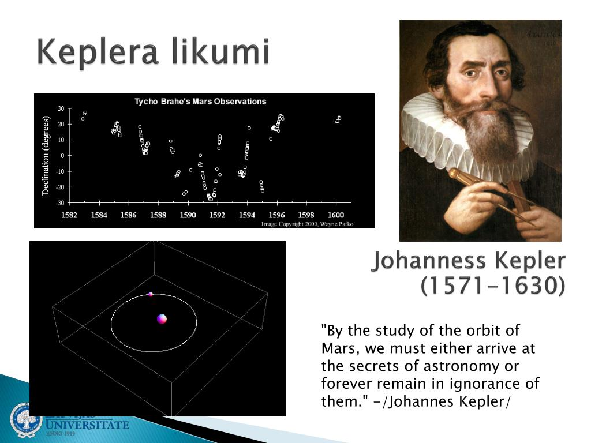
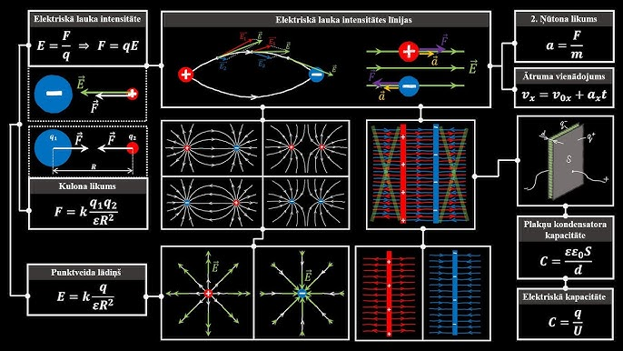
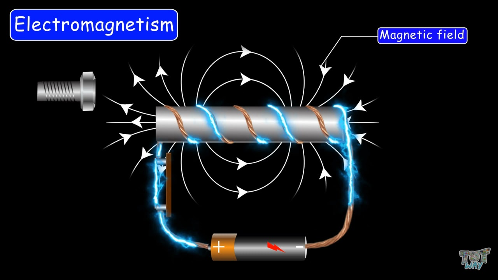
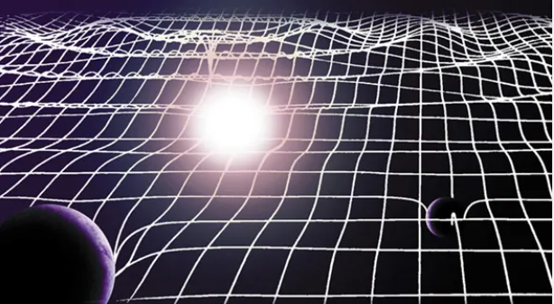

Home
repl.it
Keplera likumi: tie apraksta planētu kustību ap Sauli un citiem debess ķermeņiem. Šo likumu pamatā ir klasiskā mehānika un gravitācijas pievilkšanās.
>
Ņūtona likumi: tiem ir svarīga nozīme, lai izprastu debess ķermeņu kustību un to savstarpējo mijiedarbību.
м
Termodinamika: pētījumi par siltuma procesiem kosmiskos objektos, piemēram, zvaigznēs, planētās un gāzu mākoņos. Tas palīdz izprast kodolsintēzes procesus zvaigznēs un kosmisko objektu evolūciju.
Elektromagnētisms: pētījumi par elektromagnētiskajiem viļņiem, piemēram, gaismu, radioviļņiem, rentgena un gamma stariem, kurus pēta astronomijā, lai iegūtu informāciju par kosmiskiem objektiem.

Relativitātes teorija: tā ir svarīga fizikālā teorija, ko izmanto astronomijā, lai izprastu gravitācijas mijiedarbību starp debess ķermeņiem un kosmosa struktūru.
